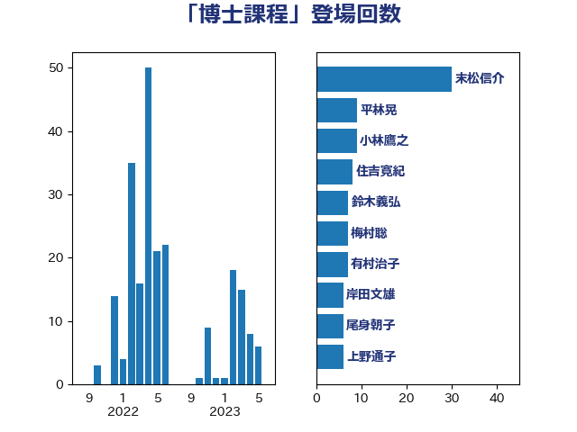

単語「博士課程」

| 末松信介 | 自由民主党 | 30 回 |
| 萩生田光一 | 自由民主党 | 30 回 |
| 上野通子 | 自由民主党 | 10 回 |
| 尾身朝子 | 自由民主党 | 10 回 |
| 小林鷹之 | 自由民主党 | 9 回 |
| 平林晃 | 公明党 | 8 回 |
| 藤田文武 | 日本維新の会 | 8 回 |
| 岸田文雄 | 自由民主党 | 6 回 |
| 有村治子 | 自由民主党 | 6 回 |
| 井上信治 | 自由民主党 | 5 回 |
| 安江伸夫 | 公明党 | 5 回 |
| 藤岡隆雄 | 立憲民主党 | 5 回 |
| 金村龍那 | 日本維新の会 | 5 回 |
| 丹羽秀樹 | 自由民主党 | 4 回 |
| 吉良よし子 | 日本共産党 | 4 回 |
| 国光あやの | 自由民主党 | 4 回 |
| 浮島智子 | 公明党 | 4 回 |
| 田村智子 | 日本共産党 | 4 回 |
| 舩後靖彦 | れいわ新選組 | 4 回 |
| 鈴木俊一 | 自由民主党 | 4 回 |
| 一谷勇一郎 | 日本維新の会 | 3 回 |
| 三木亨 | 自由民主党 | 3 回 |
| 城井崇 | 立憲民主党 | 3 回 |
| 岡本三成 | 公明党 | 3 回 |
| 西銘恒三郎 | 自由民主党 | 3 回 |
| 三木圭恵 | 日本維新の会 | 2 回 |
| 大塚耕平 | 国民民主党 | 2 回 |
| 宮本徹 | 日本共産党 | 2 回 |
| 山口那津男 | 公明党 | 2 回 |
| 掘井健智 | 日本維新の会 | 2 回 |
| 斎藤嘉隆 | 立憲民主党 | 2 回 |
| 池田佳隆 | 自由民主党 | 2 回 |
| 田島麻衣子 | 立憲民主党 | 2 回 |
| 菅義偉 | 自由民主党 | 2 回 |
| 阿部司 | 日本維新の会 | 2 回 |
| 中西祐介 | 自由民主党 | 1 回 |
| 伊佐進一 | 公明党 | 1 回 |
| 坂本祐之輔 | 立憲民主党 | 1 回 |
| 堀井巌 | 自由民主党 | 1 回 |
| 大野敬太郎 | 自由民主党 | 1 回 |
| 山崎正恭 | 公明党 | 1 回 |
| 市村浩一郎 | 日本維新の会 | 1 回 |
| 木原誠二 | 自由民主党 | 1 回 |
| 柴田巧 | 日本維新の会 | 1 回 |
| 稲津久 | 公明党 | 1 回 |
| 空本誠喜 | 日本維新の会 | 1 回 |
| 笠浩史 | 無所属 | 1 回 |
| 西岡秀子 | 国民民主党 | 1 回 |
| 赤池誠章 | 自由民主党 | 1 回 |